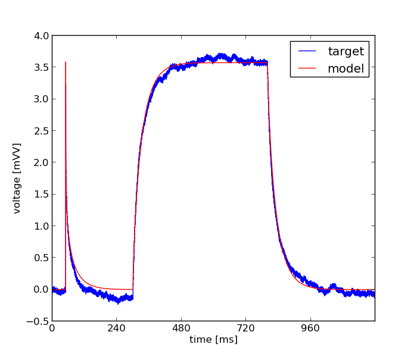

Mon Sep 30 14:43:19 2013
Optimization of 210710-C0_morphology.hoc based on: /home/fripe/workspace/git/optimizer/tests/golgi_exp/210710-C0_exp.dat
Results
| Parameter Name | Minimum | Maximum | Optimum |
|---|---|---|---|
| cm | 1.0 | 10.0 | 3.25237710113 |
| Ra | 100.0 | 700.0 | 699.846625872 |
| g_pas | 1e-06 | 0.01 | 8.70114846713e-05 |
Fitnes: 0.000407899737272

Error Tolerance for x: = None
Size of Population: = 20.0
Accuracy: = None
Mutation Rate: = 0.25
Cooling Rate: = None
Final Temperature: = None
Std. Deviation of Gaussian: = None
Cooling Schedule: = None
boundaries = [[1.0, 100.0, 1e-06], [10.0, 700.0, 0.01]]
Number of Generations: = 20.0
evo_strat = Classical EO
seed = 1234.0
Initial Temperature: = None
starting_points = None
Dwell: = None
Mean of Gaussian: = None
Error Tolerance for f: = None
num_inputs = 3
feats = Average Squared Error
weights = [1.0]
user function = #Please define your function below in the template! #You may choose an arbitrary name for your function, #but the input parameters must be self and a vector!In the first line of the function specify the length of the vector in a comment! #In the second line you may specify the names of the parameters in a comment, separated by spaces. def usr_fun(self,v): #3 #cm #Ra #g_pas for sec in h.allsec(): sec.cm=v[0] sec.Ra=v[1] for seg in sec: seg.g_pas=v[2] seg.e_pas=0